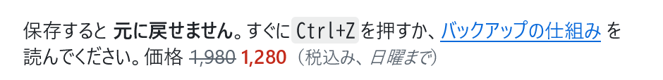
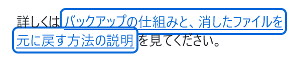
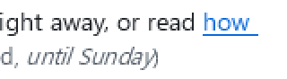
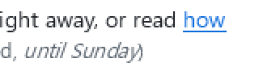

kargui 開発レポート ・ 第 9 章
書式付きの文字
0.2 の後の 5 つ目として、書式付きの文字を足しました。1 つの文の中で、太字・斜体・色・コード・リンクを混ぜられます。この章では、範囲を表示だけにした理由と、1 つの段落として並べて部分ごとに色を付ける仕組みを書きます。最後に、作る途中で直した 3 つのことと、作者の手の確かめの結果を書きます。
この章で分かること
- 書式付きの文字の範囲を、表示だけにした理由
- 文字の形ごとに「どの文字の形か」を持たせて、部分ごとに色を付ける方法
- 文の中のリンクを、読み上げソフトと試験台から押せる部品にする方法
- 白の上で見えなかったコードの背景と、行末の空白に引いていた下線
- Linux の書体で落ちた、書体の幅に頼った試験
書き方
ui.rich_text(|t| …) の中で、部分を順に足します。t.text("…") の後に付けた書式は、その部分だけに効きます。t.link("…") はリンクで、押されたかをその場で返します。
ui.rich_text(|t| {
t.text("保存すると ");
t.text("元に戻せません").bold();
t.text("。すぐに ");
t.text("Ctrl+Z").code();
t.text(" を押すか、");
if t.link("バックアップの仕組み").clicked() {
show_help = true;
}
t.text(" を読んでください。");
});
部分の書式は、ラベルと同じ名前にそろえました（.bold()・.strike()・.weak()・.small()・.size()・.font()・.monospace()）。書式付きの文字だけにあるのは、.italic()・.underline()・.color()・.code() の 4 つです。段落は幅に合わせて折り返します。
範囲を表示だけにした理由
計画書の「書式付きの文字」には、中身の決まりがありませんでした。最初の調べ（13 のフレームワーク）では、文の中のリンクは 7 割前後が持つ 2 群、書式付きの文字の編集は 6 以下しか持たない 3 群でした。そこで、今回は表示だけにしました。
| 考えたこと | 表示だけ（選んだ） | 編集まで |
|---|---|---|
| ふつうのアプリで要る場面 | 多い（説明文・注意書き・リンク付きの案内・記録の色分け） | 少ない（メールやメモを書くアプリ） |
| ほかの部品の土台になるか | なる（Markdown の表示・ヘルプの画面） | 表示の部品の上に作る形になる |
| 手間 | 中くらい | 大きい（選択・取り消し・日本語入力・書式の切り替えを全部作り直す） |
1 つの段落として並べる仕組み
部分ごとに文字を並べて横につなぐと、日本語の折り返しがうまくいきません。部分の途中で行を変えられないからです。そこで、部分をつないだ 1 つの文字列を、範囲ごとの書式を付けて 1 回で並べます。並べるのは文字の道（Windows は DirectWrite、ほかの OS は parley）です。
今まで、並べた文字の形は位置と形の番号だけを持っていました。描く時は、ラベル全体を 1 色で塗れば済んだからです。書式付きの文字では、形ごとに「どの文字の形か」（UTF-16 の位置）を持たせ、そこから部分を引いて色を決めます。位置の取り方は、2 つの文字の道で違います。
- DirectWrite は、並べた形を受け取る係に、文字と形の対応表（clusterMap）を渡します。表の中で最初に出てくる文字を、その形の位置にします。
- parley は、行の中の並びを文字のまとまり（クラスター）に分けて持っています。まとまりを見た目の順にたどり、まとまりの頭の位置を中の形に付けます。
下線と取り消し線は、行のベースラインから測って引きます。行の情報にベースラインの位置を足しました。斜体は、日本語の書体のように斜体を持たない書体では形を傾けて作ります。DirectWrite は自分で傾けます。parley の道は、傾ける角度（synthesis の skew）を受け取り、形を作る時に swash の変換で傾けます。これらを足しても、手引きに載せている 33 種類の部品の写真（明暗で 66 枚）は 1 画素も変わりませんでした。
段落は 1 つの部品として描きますが、読み上げソフトと試験台は部分ごとに知る必要があります。部分を子の部品にもして、描くのは親、名前と四角は子、と役目を分けました。レイアウトの仕組みは葉の部品の子を置かないので、子の四角は並べた後に、最初の行の区間から決めます。
リンク
文の中のリンクは、Tab で焦点が止まり、Enter で押せます。2 行にまたがるリンクは、行ごとに当たりの四角を足すので、どちらの行を押しても同じリンクです。焦点の枠も行ごとに描きます。

リンクの上では、ポインターを手の形にしました。WinUI のリンクと同じです。前からある ui.link も、今まではずっと矢印のままだったので、同じく手の形にしました。押した時は、記録に rich.link text=… を書きます。
作る途中で直した 3 つのこと
1. コードの背景が、白の上で見えなかった
最初は、コードの背景にテーマのボタンの色を使いました。写真を撮って画素を読むと、白い背景との差が 9 以下で、ほとんど見えませんでした。ボタンの面には合う薄さでも、文字の下に敷く印には薄すぎたのです。背景は、文字の色を薄く重ねる形に変えました（明るい表示で 8%、暗い表示で 12%）。
| 表示 | 段落の背景 | 直す前（テーマのボタンの色） | 直した後（文字の色を重ねる） |
|---|---|---|---|
| 明るい | 255, 255, 255 | 246, 248, 250（差 5〜9） | 237, 238, 238（差 17〜18） |
| 暗い | 22, 25, 29 | 33, 38, 45（差 11〜16） | 47, 50, 54（差 25） |
2. 行末にぶら下がる空白にも、下線を引いていた
リンク「how backups work」が「how」の後で折り返すと、1 行目の下線が「how」の後ろの空白の下まで伸びていました。折り返した行の終わりの空白は、見た目では行の外にあります。ブラウザもこの空白には下線を引きません。範囲が行の終わりで終わる時だけ、終わりの空白を区間から外しました。行の途中の空白（リンクの中の語と語の間）は、今までどおり下線を引きます。


3. Linux で、試験が 1 つ落ちた
WSL の Ubuntu で試験を走らせると、「2 行に折り返したリンクの 2 行目を押す」試験が落ちました。試験の前提は「リンクは 1 行目の途中から始まる」です。ところが Linux では、リンクが 2 行目の頭から始まっていました。
原因は書体の幅です。Linux の日本語の書体（Noto Sans CJK）は、Windows の Yu Gothic UI より字が広く出ます。そのため、リンクの前の「保存すると 元に戻せません。詳しくは 」で、1 行目がちょうどいっぱいになりました。リンクの中の折り返しは Linux でも起きていて、書式付きの文字の作りに問題はありませんでした。試験の文を、短い「詳しくは 」の後に 30 字のリンクを置く形に変えました。これなら、どの書体でもリンクは 1 行目の途中から始まり、次の行へ折り返します。
このとき、Linux の試験の出力に「ICU4X data error: No segmentation model for complex script: Chinese/Japanese」という知らせが 12 回出ました。日本語の区切りの辞書が無い時に、辞書を使わない区切り方に戻ったという知らせで、失敗ではありません。WSL では試験の文を変えた後に出なくなりましたが、Linux の検証機（Debian 13）では、書式付きの文字を足す前の版でも出ています。出るかどうかは文と環境で変わるので、次の段階（Linux の窓）で調べます。
どこで行が変わるかは、書体の字の幅で決まります。書体は OS ごとに違うので、「この語は 1 行目の途中にある」という前提は、別の OS で崩れます。折り返しを試す時は、どの書体でも同じ結果になる文（短い前置きと、必ず折り返す長さの部分）を選んでください。第 7 章と第 8 章に続き、書体の違いで CI や別の OS の試験が落ちたのはこれで 3 回目です。
作者の手の確かめ
設定の見本に、書式の見本の 1 行と、統計の説明の段落（送る中身の例を出し入れするリンク）を足しました。作者が試した記録を読むと、どの操作も期待どおりでした。
| 操作 | 記録で確かめたこと |
|---|---|
| リンクを押す（14 回） | 押すたびに rich.link と見本の記録が 1 行ずつ出て、例が出る・消えるを交互に繰り返した。ビューを何回回しても 1 回 |
| 2 行にまたがったリンク | 押した位置は 2 行分の高さ（y 421〜464）と、狭めた窓の左端（x 47〜67）。どれも同じリンクに当たった |
| Tab と Enter | チェックの後の Tab でリンクに焦点が移り、Enter 2 回で例が出て、消えた |
| 色・テーマ・書体を変える | 強調の色を #D93025 に、テーマを 3 回、書体を 3 回変えた。間違いや警告の記録は 0 行 |
軽さ
作者の確かめの間の描画は 488 フレームで、中央が 3.4 ms、9 割が 4.3 ms 以内でした。8 ms を超えたのは 3 フレームで、起動・色の選択を閉じた時・書体を初めて読んだ時です。どれも書式付きの文字より前からある処理です。書式付きの文字を使わないアプリでは、起動の時に何も並べません。 タスク帳の実行ファイルは 1,391,616 バイト（1.39 MB）で、前の版（7492df6）の 1,372,160 バイトより 19,456 バイト増えました。どちらも同じ手順で release で組み立てて測りました。